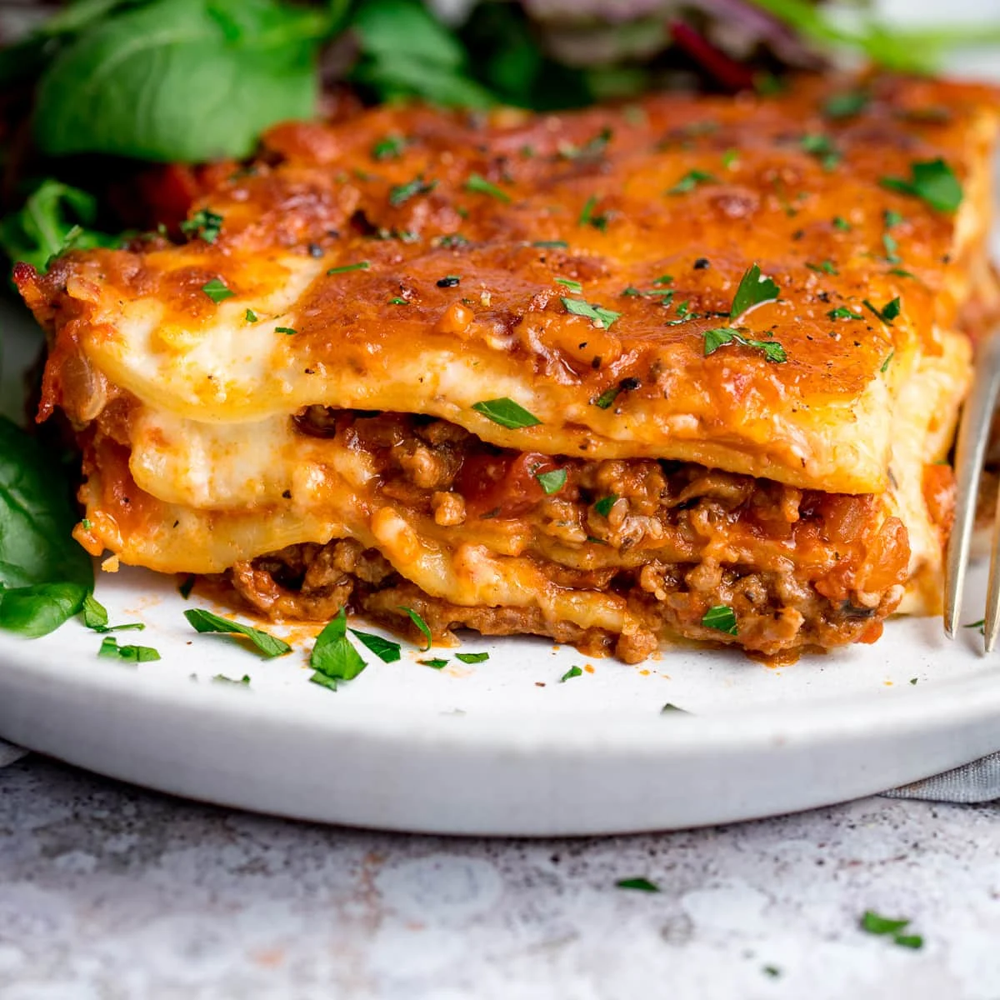

Lasange yummm

Lasange is tasty
Under the image, it should have an appropriately sized “Description” heading
followed by a paragraph or two describing the recipe.
- 2 olive oil, plus a little for the dish
- 750g lean beef mince
- tomato sauce
- 200ml hot beef stock
- 300g pack fresh lasagne sheets
Steps
-
To make the meat sauce, heat 2 tbsp olive oil in a frying pan and cook 750g
lean beef mince in two batches for about 10 mins until browned all over.
-
Finely chop 4 slices of prosciutto from a 90g pack, then stir through the
meat mixture.
-
Pour over 800g passata or half our basic tomato sauce recipe and 200ml hot
beef stock. Add a little grated nutmeg, then season.
-
Heat oven to 180C/fan/160C/gas 4 and lightly oil an ovenproof dish (about 30
x 20cm).
-
Repeat until you have 3 layers of pasta. Cover with the remaining 390g white
sauce, making sure you can’t see any pasta poking through.